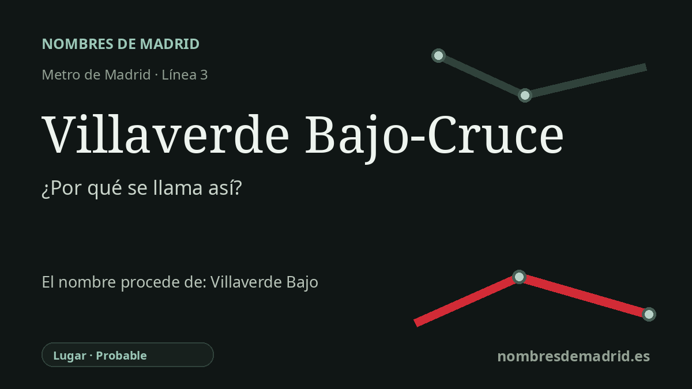

Publicado el · Investigación de Nombres de Madrid · Cómo verificamos cada origen · 10 fuentes consultadas
Respuesta rápida
Villaverde Bajo-Cruce toma su nombre de la zona de Villaverde Bajo y de El Cruce, el enlace viario e intercambiador situado junto a la avenida de Andalucía y la carretera de Villaverde a Vallecas. Detrás está el antiguo topónimo Villaverde, una formación transparente de 'villa/pueblo verde', y un paisaje ferroviario que convirtió este punto del sur de Madrid en un nudo estratégico.
La historia del nombre
Villaverde Bajo-Cruce es un nombre claramente local. La estación de Metro está en la zona conocida como Villaverde Bajo, y el añadido **Cruce** remite a **El Cruce**, el punto donde la avenida de Andalucía se encuentra con la carretera de Villaverde a Vallecas. Cuando la línea 3 se prolongó hacia el sur en 2007, la estación se situó allí para dar servicio a Villaverde Bajo y al sur de Los Ángeles, con un intercambiador de autobuses en superficie que reforzó ese mismo nombre.
El nombre de fondo es **Villaverde**. Es un topónimo español transparente: *villa*, en el sentido de población o núcleo, más *verde*. Para el nombre del color, Toponomasticon Hispaniae vincula el español *verde* con el latín *viridis*. Eso respalda la explicación general de 'villa' o 'pueblo verde', aunque no se ha localizado una fuente medieval u oficial que pruebe que este lugar madrileño se escribiera históricamente con la fórmula latina exacta *villa viridis*.
La parte **Bajo** pertenece a la geografía y a la historia urbana de Villaverde. El antiguo municipio fue incorporado a Madrid por decreto en 1954, después de una larga trayectoria rural e industrial en el borde sur de la capital. En el uso común, Villaverde Alto designa el núcleo histórico o más elevado, mientras que Villaverde Bajo identifica la zona oriental o baja, muy marcada por el ferrocarril y por el posterior crecimiento residencial.
La parte **Cruce** no es solo una referencia viaria. Villaverde Bajo estuvo junto a uno de los paisajes ferroviarios de enlace más importantes de Madrid, donde líneas y ramales industriales conectaban los corredores hacia Extremadura, Andalucía y Levante. La guía arquitectónica del COAM describe Villaverde Bajo como un ámbito ferroviario junto a la bifurcación entre las líneas de Extremadura y Andalucía-Levante, con un apeadero de MZA abierto en 1893 y un complejo mayor proyectado en 1924 e inaugurado en 1931.
Un dato de la redacción actual debe corregirse: la primera historia ferroviaria no debería fecharse como 9 de febrero de 1861 para la línea Madrid-Aranjuez. La cronología habitual da el 9 de febrero de 1851 para esa línea, mientras que la fuente disponible del COAM da 1893 para el primer apeadero destacado de MZA en Villaverde Bajo. El origen del nombre está bien apoyado, pero la cronología ferroviaria debe explicarse como una historia por capas, no como una única fecha de apertura.